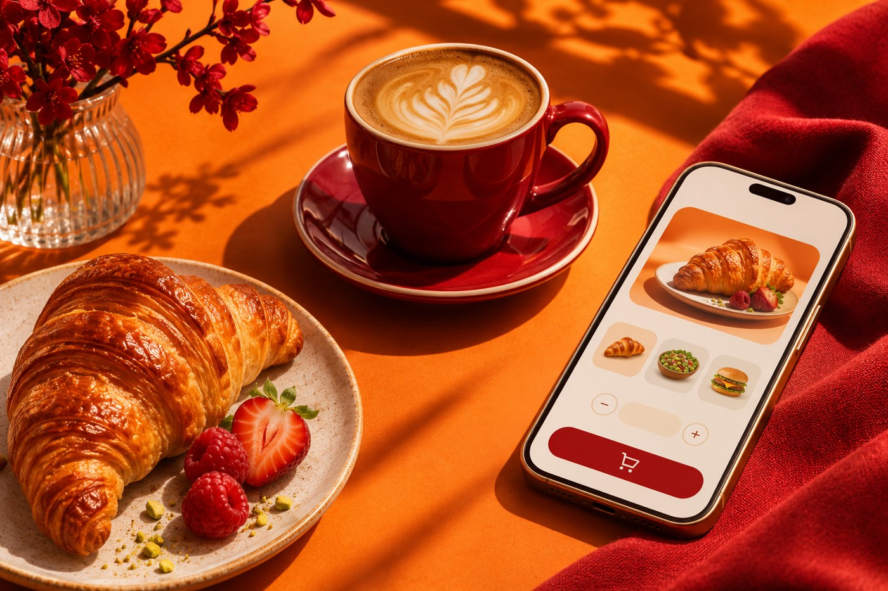

01 / Самовивіз
Coffee & Cheesecake to Go
Героїня забирає каву й чізкейк дорогою на домашній кіновечір.
CTAOrder ahead. Enjoy more.
An online ordering experience for a café.
The full case study is in progress.

CoolFood — концепт власного застосунку кафе. У ньому можна швидко обрати страву, каву чи десерт, оформити замовлення й забрати його дорогою або замовити доставку. Мета продукту — заощадити час від вибору в меню до отримання замовлення.
Основна аудиторія — зайняті люди 25–40 років, які працюють у компаніях, у роздрібній торгівлі або ведуть власну справу. Вони поєднують роботу із сімейними справами, хобі й особистими планами.
Дві типові ситуації для замовлення.
Для порівняння взяла заклади з власним каналом онлайн-замовлення.
Для CoolFood ці приклади підказують, що перевірити в сценарії замовлення — де гість обирає спосіб отримання і коли бачить, де й коли забрати замовлення.
Дві історії показують, як CoolFood вписується у звичайний вечір.
Героїня забирає каву й чізкейк дорогою на домашній кіновечір.
CTAOrder ahead. Enjoy more.
Лабрадор підштовхує господиню зробити замовлення, бо мріє про власне печиво. Його думки задають грайливий тон, а коротка репліка в кадрі з меню позначає момент замовлення.
CTAOrder in. Treat yourself.
Ситуація. Після довгого робочого дня хочеться десерту й вечора вдома, а часу на очікування вже мало.
П’ять кадрів ведуть від робочого дня до кіновечора. У першому й четвертому кадрах думки героїні з’являються в анімації, а фінальний кадр із закликом до дії статичний.
Ситуація. Знайомий погляд собаки, яка чекає, що їй теж перепаде смаколик.
Лабрадор приносить господині пакет із підказкою. Вона сканує QR-код, відкриває меню CoolFood і замовляє чізкейк. Вони йдуть зустрічати кур’єра, а вдома кожен отримує свій смаколик.
У сюжеті про самовивіз кіновечір показує, заради чого героїня замовляє заздалегідь. У сюжеті про доставку очікування печива дає лабрадору власну мету й веде до фінального жарту. Робоча гіпотеза — одного кадру з меню й короткою реплікою достатньо, щоб глядач зрозумів, де відбулося замовлення.